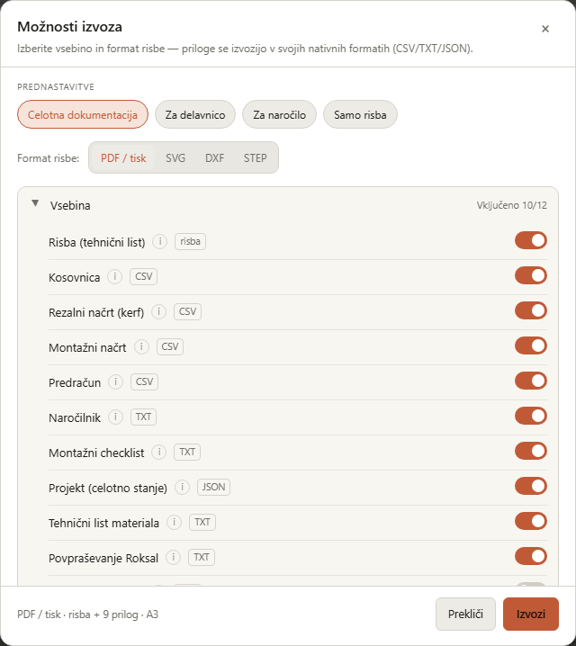
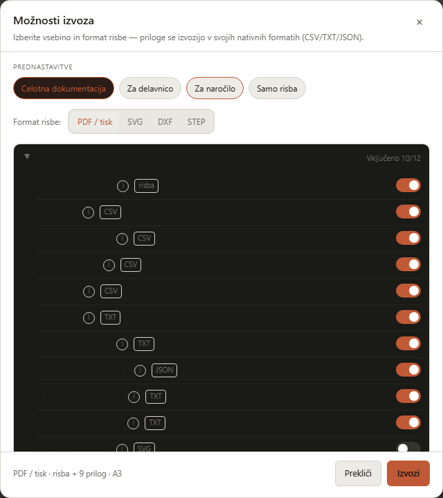
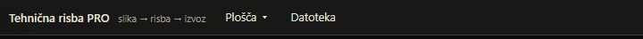
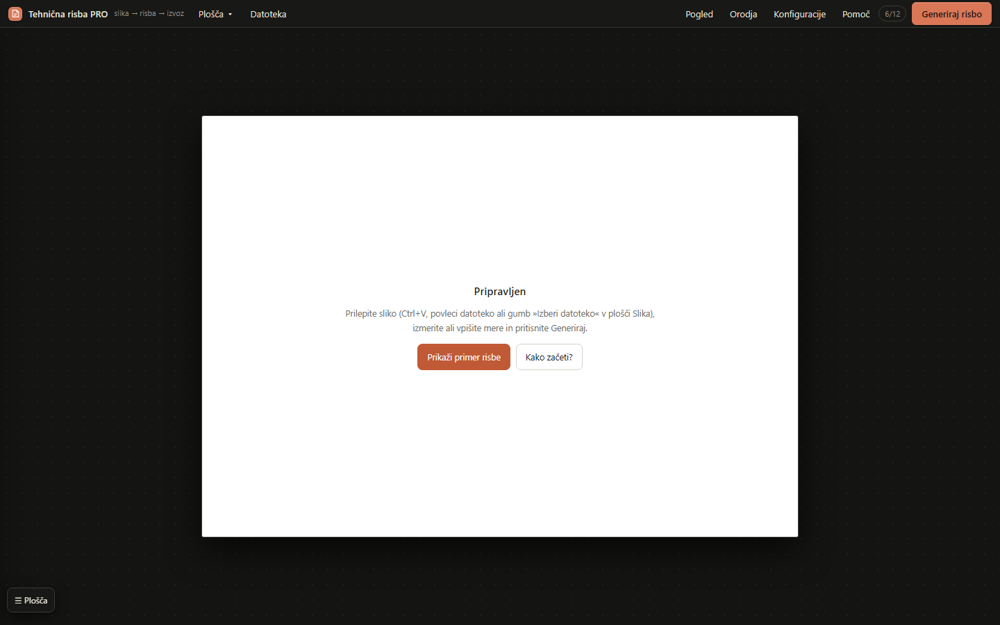
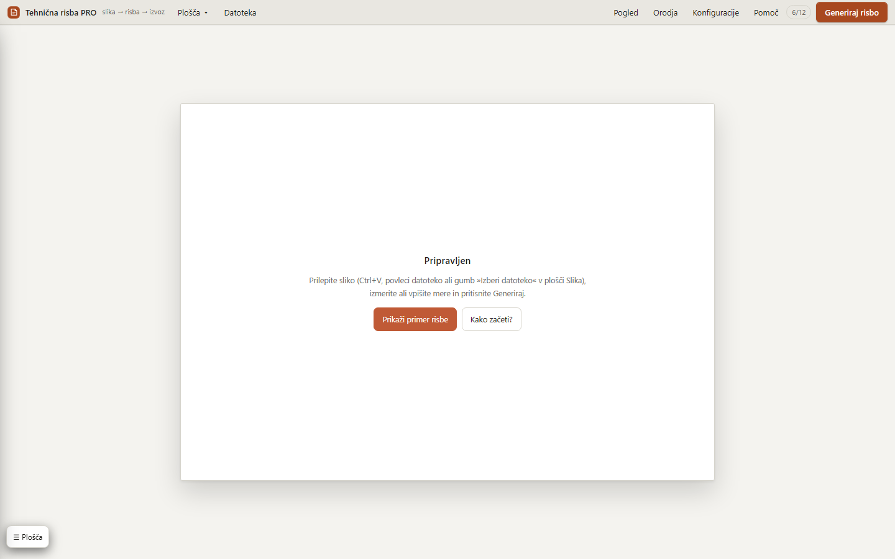
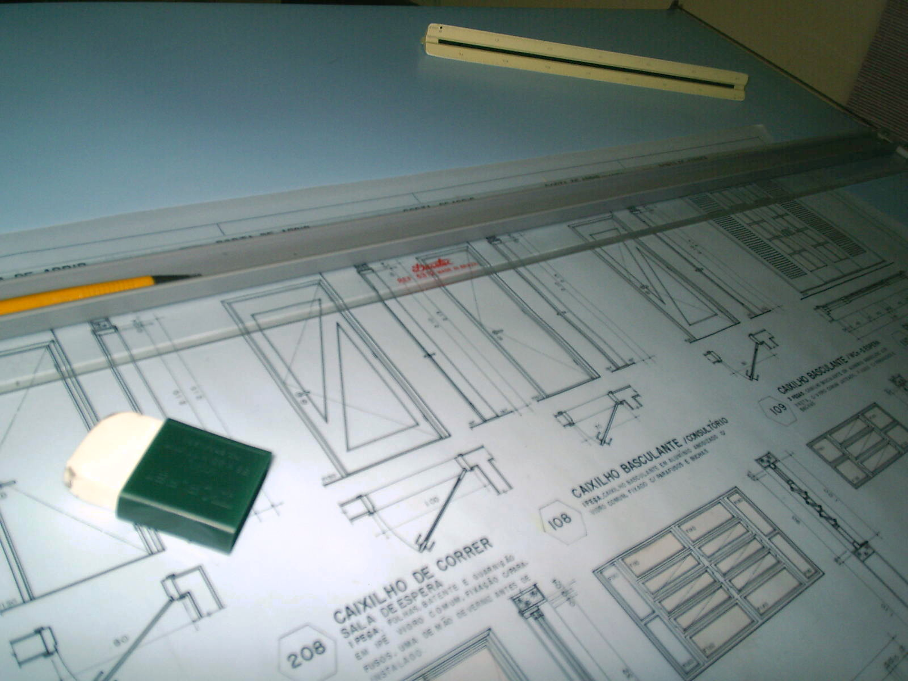
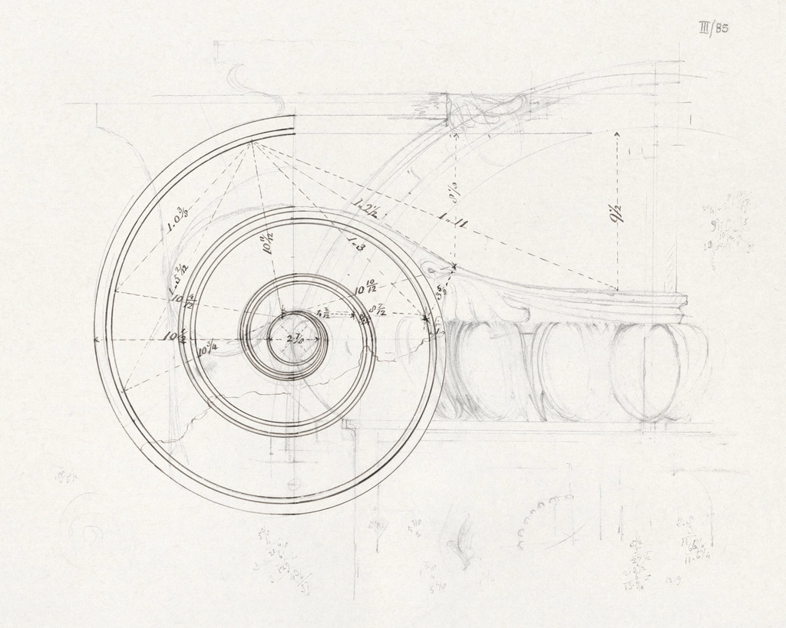

Risba iz leta 1802
Tehnično risanje je disciplina z dolgo zgodovino. Prenova se naslanja na isti standard: natančnost, berljivost, razmerja.
Izdaja 2026.11.29 · veja issue41-local-visual-upgrade · referenčni standard ISO 128-1 / TPD, 2027 · vsi suiti zeleni, samoprevera 126/126. Posnetki so iz resnične aplikacije.


Celovita svetla tema: sekcije, vrstice, stikala in žetoni sledijo paleti. Pred: temna ploskev na belem oknu, imena postavk neberljiva.
Prazen bel list čez celo platno postane list A3 s pravim razmerjem 420 : 297, sredinski klic k dejanju in risalna mreža.
Znamka z ikono lista, enotna 13 px tipografija, tišji podnaslov, čip števca vidnih polj ob glavnem ukrepu.
Pred

Ukrep je v prvi vrstici ob imenu, meniji se prelomijo pod njim.
Enak izvoz in ista struktura v obeh temah; barve sledijo skupnim spremenljivkam.
Temna

Svetla

Enak izvoz in ista struktura v obeh temah; barve sledijo skupnim spremenljivkam.
Konkretni defekti, ki so jih testi zajeli.
Pod vsakim vnosnim poljem in v spustnih seznamih se je izpisal tuj znak.
npr. themeBtn, zoomFit, isoBtn.
Pravila z njima so bila mrtva.
Platno, sistemska kartica, izvozno okno, opozorila, aktivni čipi.
Oštevilčeni sklopi, fokusni obroči, lastna puščica selectov, čip števca polj.
Usklajen z barvo vrstice; test preverja proti spremenljivki --bar.

Tehnično risanje je disciplina z dolgo zgodovino. Prenova se naslanja na isti standard: natančnost, berljivost, razmerja.
